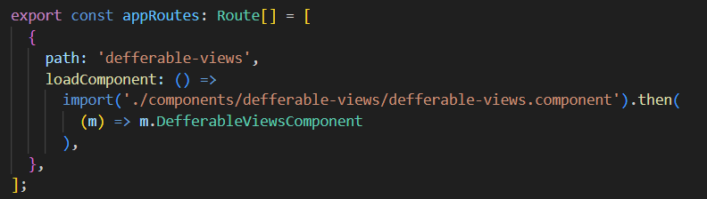
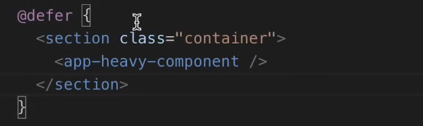
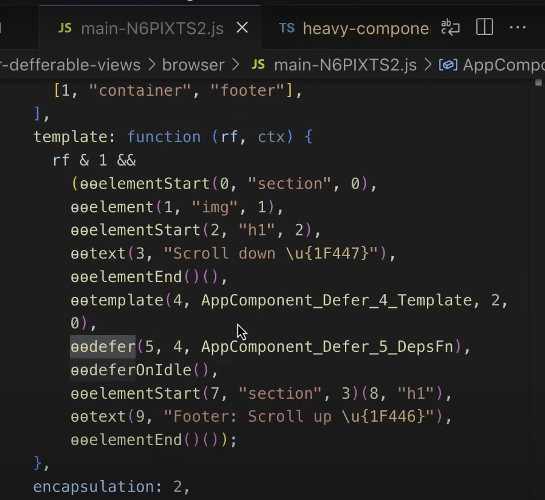
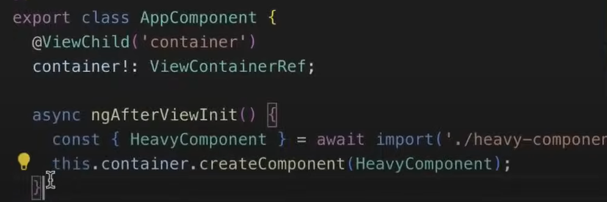
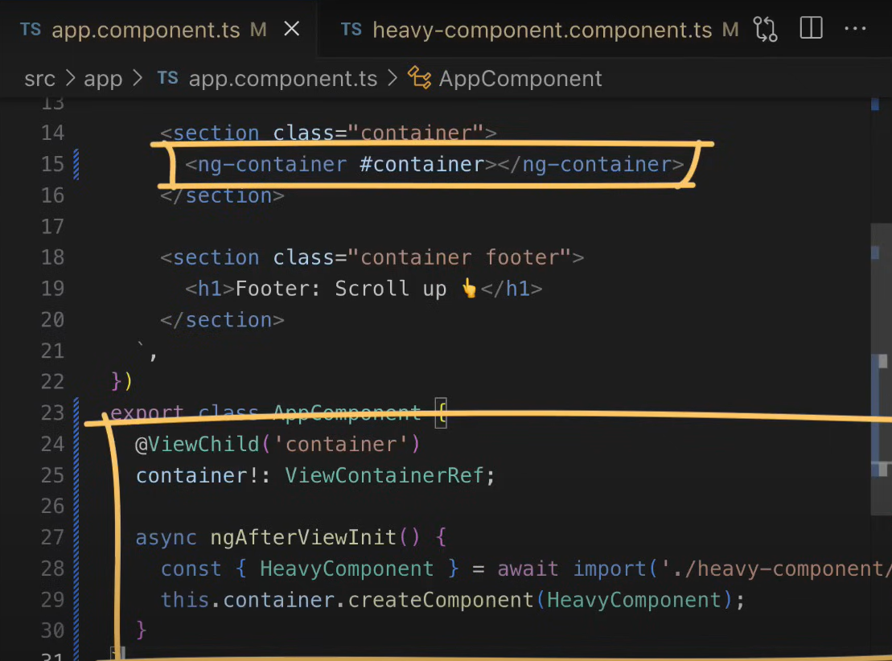
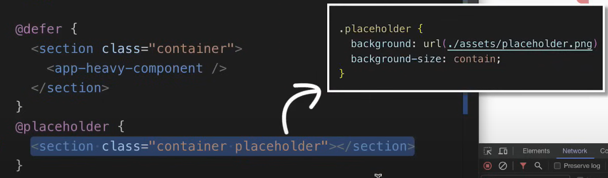
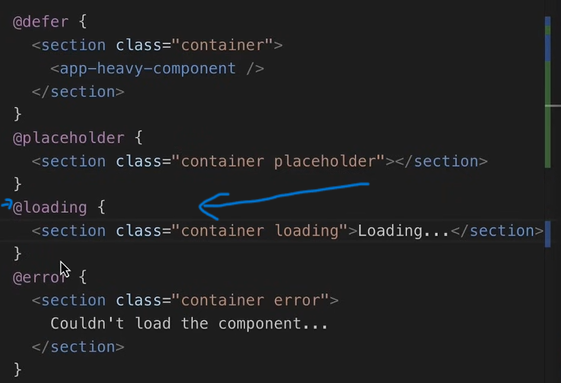
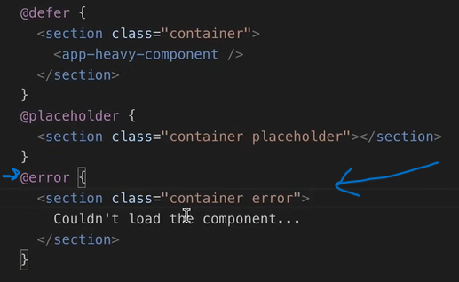

Before Angular 17 we had a couple of ways to reduce bundle size for our application. The first one is a well-known router based lazy loading.  I just take a route and in the loadComponent property I can define this simple simple notation which instructs Angular that the JavaScript code for this component has to be removed from the main application bundle size and loaded only when this road is activated.
Read after # Recognize the Problem
Starting with Angular 17 the same
functionality we can implement by wrapping our heavy component that we
want to Lazy Load with this brand new
@defer block just like below.

With this new approach we will write less code, more declarative code
and intention of the code is clear.
If we want to investigate the compiled code of this component with
defferable view block we will see that during the compilation phase
the Angular compiler transforms this notation into a bunch of
functions. The first function is the defer function which performs all
the magic. Angular perform very similar thing that we did in the
# Recognize the Problem, but on
the lower lever using the internal Angular API and the data structures

Sometimes our apps are designed in such a way so that lazy chunk has to
be loaded based on some
certain component state
or event instead of the
Angular router state as in the previous example with Lazy Loading.
It is also possible even with the older Angular version, but the
solution would not be simple because it involves some in-depth knowledge
about
ES6 Dynamic Imports and
Dynamic Components Creation
and additional work from our side.
The simplest solution might look like this one where we can distinguish
two faces:
1. chunk loading and
2. component activation phase

The loading stage would look like the usage of Angular dynamic import
which at build time instructs Angular bundler that this component has to
be chunked out from the main bundle and at run time the same piece of
code will load this chunk from the endpoint and from there we can
destructure already their component class, however is not enough just to
load their component, we need to dynamically created in order to see it
on the page and this is something that we do during the second phase
which involves also multiple steps like:
1. defining container element
in the template,
2. get reference to this container
and finally we can
3. create component instance.

Quite a lot of code and I didn't speak about things like showing the
loader during the chunk loading or error handling and many other things
we need to care about in real usecases.
Before the lazy component it is loaded and activated we would like to show some placeholder to give the user some visual feedback that something is going on and it is straightforward to achieve with the dedicated @placeholder block.  The content defined inside this block will be shown before the lazy content is activated.
Sometimes we want to notify users specifically about the chunk loading. For that there is another block called loading that works very similar previous blocks. The content inside the curly braces will be shown during this phase.  The difference between loading and placeholder blocks can be confusing because when we Load and Activate the defer block then the loading block immediately overlaps the placeholder block and you may think that those two states are interchangeable, but these two are different stages in the process. The chunk loading stage is a part of the defer block activation stage.
In the case when the lazy chunk couldn't be loaded we can show user the template inside error block.
The @placeholder, @loading, @error, will be eagerly loaded and will be bundled into the main bundle, we need to keep in mind that.
7:35